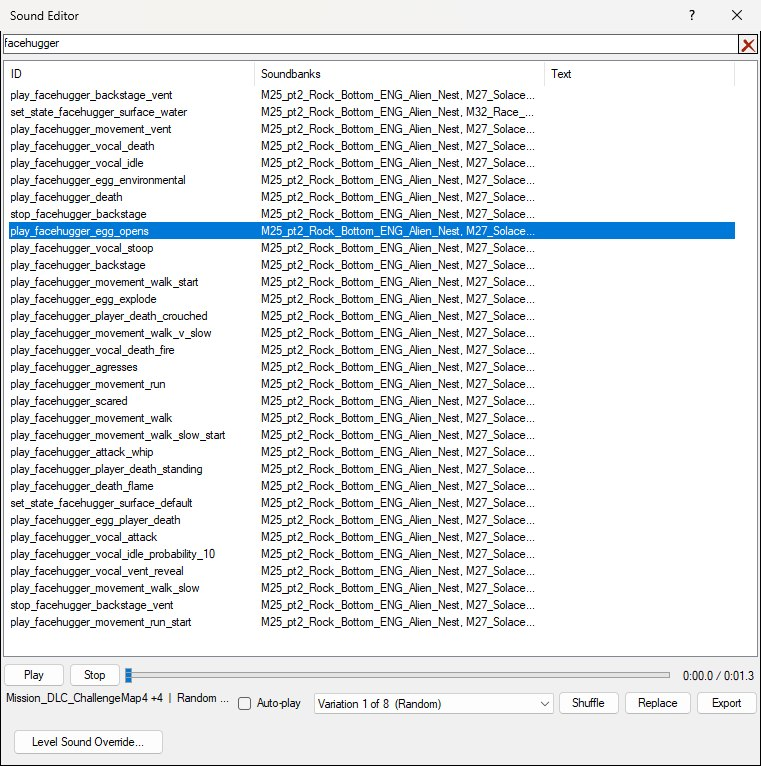
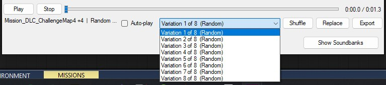
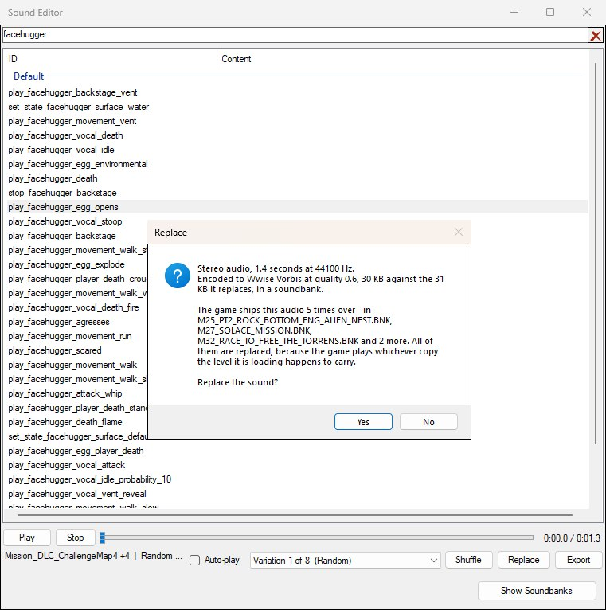
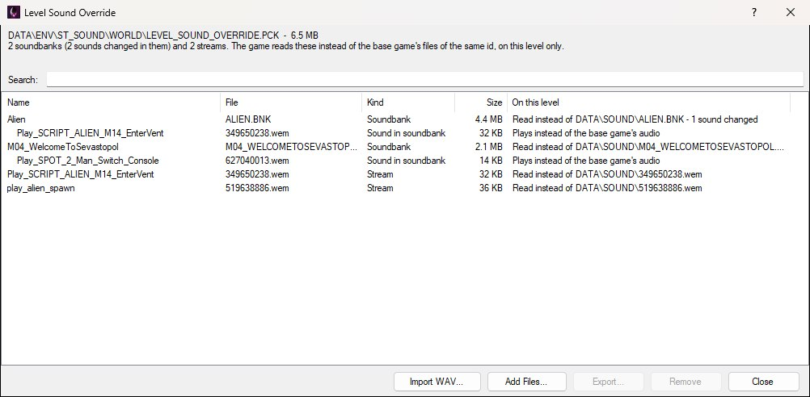
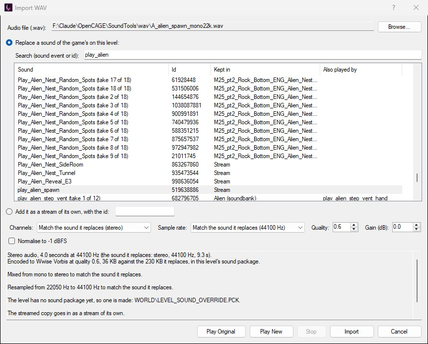
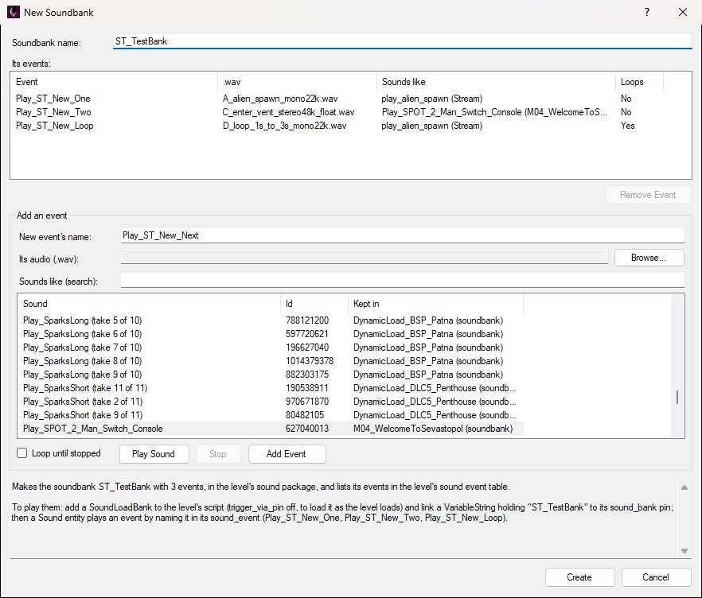
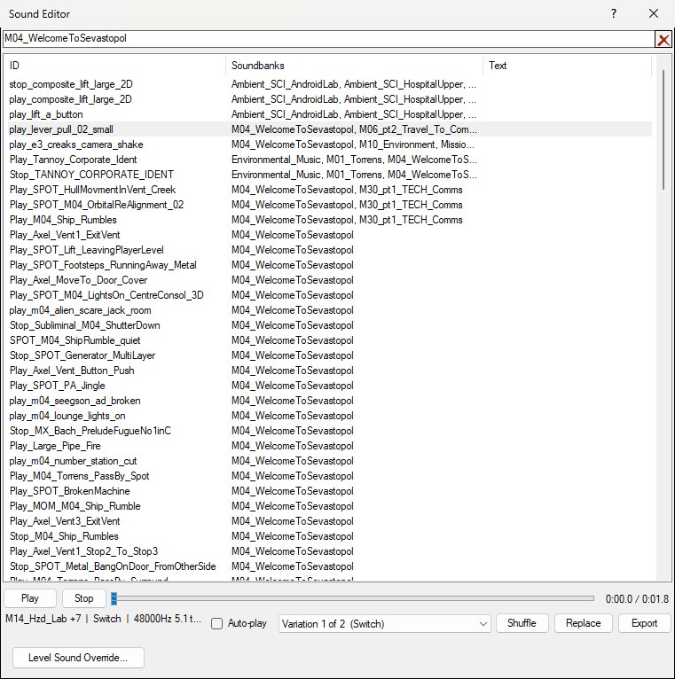

Alien: Isolation's audio runs through Wwise. Scripts don't reference audio files — they fire sound events by name, and Wwise decides what that means: which take to play, whether to pick at random, which bank the audio comes from.
Whenever you set a sound event on an entity parameter, OpenCAGE opens the sound event selector. That window has a player along its bottom edge, so you can hear what an event actually sounds like before committing to it — and export or replace the audio behind it.
The same window opens from View → Sound Editor once a level is loaded, with no parameter behind it: every sound event the level knows (shown below), with the soundbanks each is in, to listen through, export or replace, without first finding an entity that plays one. The box along the top filters the list as you type, on the event's name or the name of a soundbank it's in. It stays open while you work in the editor and closes when the level does. Only one of these windows is open at a time, so editing a sound event parameter in the inspector closes the Sound Editor and opens the picker in its place.

View → Sound Editor with an event selected. Opened from a parameter instead, the same window is titled Select for 'sound_event' and gains a Select button.
Three ideas are worth having straight before you start changing things:
The player exposes every variation it managed to resolve — below, the eight random takes behind play_facehugger_egg_opens — which is the only way to hear what an event will really sound like in the game rather than one arbitrary take of it.

Every take the event resolved to is listed; Shuffle picks one at random the way the game would.
The first time you open the selector, OpenCAGE starts indexing the game's soundbanks in the background so the first sound you click is ready rather than waiting on a cold index. While that runs the player's status line reads Indexing the game's soundbanks..., then Decoding... for each take.
Two entities do the work, and you generally need both:
sound_event parameter and trigger it; that parameter is what opens the selector described on this page.Which bank to load is exactly what the Soundbanks column tells you — find the event, read off a soundbank it's listed in, and have a SoundLoadBank load it: link a VariableString holding the bank's name to the SoundLoadBank's sound_bank pin, the way the game's own scripts do. A name typed straight onto the pin isn't read. See Soundbank Metadata.
Banks that are permanently resident don't need loading; those are configured separately under Permanent Soundbanks.
Character dialogue is fired the same way — through sound events — but by entities that also know which character is speaking, so the line comes from the right place and drives the right face:
character to speak it (plus an alt_character), and like Sound it inherits its sound_event from SoundPlaybackBaseClass. speech_priority decides what it interrupts or is interrupted by, and queue_time is how long it will wait for a slot before giving up. Fires on_speech_started.character_01…character_05, each with an alt) and up to ten lines. Each line has a line_NN_event for the sound event, a line_NN_character naming which of the five slots delivers it, and — from the second line onwards — a line_NN_delay for the pause before it. Fires on_script_ended when the last line finishes.Use Speech for a barked line or a one-off; use SpeechScript for back-and-forth conversation, where hand-wiring a chain of Speech entities and delays would be far more work.
In the selector, a dialogue event shows its subtitle in the Text column, and the search box matches on that text as well as on the event name — so you can find a line by what's said. Lines whose audio depends on who is speaking can't be previewed; the player's status line says so when you select one.
Both still need their bank loaded, so the Soundbanks column → SoundLoadBank step above applies to dialogue as much as to any other sound.
Select an event in the list and the player fills in, as in the screenshots above. The top row is the transport; the row beneath is everything about the take that's loaded:
Random, Switch > Random and so on — its sample rate and channel layout, and the media id and the bank or package it lives in. It's cut short with an ellipsis when the window is narrow, as it is above; hover over it for the whole line, or widen the window. If an event resolves to no audio at all, this line says why instead — an event that only changes sound settings, say, or dynamic dialogue that depends on who is speaking.Audio is decoded on demand rather than up front, so a long sound may take a moment before it starts.
Export writes the variation currently selected out as a .wav, named after the event by default. The file is decoded from whatever the game stores it as, so you get plain uncompressed audio you can open anywhere: 16-bit PCM, with a 5.1 sound mixed down to stereo. A sound longer than five minutes is only decoded, played and exported up to that point, and the status line ends with first 5 minutes only.
Exporting waits for the decode to finish first, which for a long sound is a few seconds — the button greys out while it works.
Note that this exports one variation, not the whole event. If an event has eight footstep takes and you want all of them, export each in turn.
Replace swaps the audio behind the selected variation for a .wav of your own. OpenCAGE encodes it into exactly the form the game's decoder expects and writes it into the soundbanks that hold it — for every level, or for the open level alone (see Replacing for One Level).
Everything is checked before anything is written. If the audio can't be imported, you're told why and nothing changes — you won't be left with a half-edited soundbank. If it can, you get a summary first:

The summary shown before a replacement is written. Nothing changes until you answer Yes.
Answer Yes and the replacement is applied; the variation is then reloaded into the player, so you can play the new audio straight back.
Replacement audio must be a .wav. A few things to keep in mind:
.wav must be uncompressed PCM (8, 16, 24 or 32-bit) or floating point. The game's codebooks only cover mono and stereo, so a file with more channels is mixed down to stereo. A sample rate the game's decoder isn't set up for is resampled to the nearest one it is: mono works from 16000 Hz up, stereo from 32000 Hz up, and anything above 48000 Hz (the highest the game ships) comes down to 48000 Hz. The summary says when either happened.The same audio is often shipped in several banks at once, because banks are loaded per level and a sound used in three levels lives in three places.
A replacement therefore updates every copy the game ships, not just the one you were listening to — the summary says how many there are and names the banks, as in the dialog above. If it only changed one, the old sound would come back in whichever level loaded a different bank — which reads as a bug in the game rather than an unfinished edit.
If some copies write and others fail, OpenCAGE says so explicitly rather than reporting success, since a partial replacement leaves the sound changed in some places and not others.
Replacing for every level is global. The shared soundbanks aren't per-level data — For Every Level changes a sound everywhere in the game. To change it on one level only, use For This Level Only (below). Replacing isn't an undo step, so Edit → Undo won't bring the old sound back. OpenCAGE keeps a copy of each soundbank's original version the first time it changes it, for the Mod Manager, but take a backup before doing this at scale.
Replace opens a menu asking where the new audio goes:
WORLD\LEVEL_SOUND_OVERRIDE.PCK (made if the level has none yet). The game reads that package ahead of the shared sound files when it loads the level, so this level plays your audio and every other level keeps the original — see Level Sound Override. Greyed out, naming the soundbank, for a sound no level can replace (see What a Level Can't Replace).The summary before a level-only replacement says what will happen to the level's package: whether one is made, which soundbanks are copied into it, and how big it comes to. A streamed sound goes in on its own; a sound held inside a soundbank needs that whole bank in the package, so the bank is copied in once (a gun's own bank, such as PISTOL.BNK, is about 2 MB) and later replacements change the copy where it is. Of the per-level DynamicLoad_ soundbanks, only the level's own is copied: a sound is often in dozens of them, but a level only ever loads the one named for it. The shared files in DATA\SOUND are never touched.
A level that already has a package — the challenge maps and Salvage Mode levels ship one — is edited in place: a sound inside one of its own soundbanks is changed there, and everything else in it is left exactly as it was.
Any level can carry a sound package of its own: WORLD\LEVEL_SOUND_OVERRIDE.PCK in the level's folder. When the game loads the level it mounts that package ahead of the shared sound files, so a soundbank or a streamed sound in it with the same id as one in DATA\SOUND is read from the package instead — on that level alone. The challenge maps carry changed copies of shared soundbanks, soundbanks of their own and replacement streams this way.
It's how a modded map gets sounds of its own without changing the game's: replace a gun's firing sound for your level and every other level keeps the original.
The Level Sound Override… button at the bottom left of the Sound Editor lists what the open level's package holds — each soundbank, each sound changed inside it, and each stream, with its size and what it stands in for on this level. Everything is listed by name: a soundbank by its own name, and a sound by the sound event that plays it (Play_SPOT_2_Man_Switch_Console, or Play_Pistol_Fire (take 3 of 19) for one of several takes, with +2 more when other events play it too) rather than by the number its file is named for. The number is still in the File column, and stands in for the name only for audio none of the level's events plays — a soundbank of your own, say. The Search box filters the list by either.

A level's package with two sounds replaced inside copies of their soundbanks and two streams. The indented rows are the sounds that differ from the base game's copy of each soundbank.
.wav, in place of one of the game's or as a stream of its own — see Importing a WAV. With a sound selected it starts on that sound; with a soundbank selected, on that soundbank's sounds. Double-clicking a row does the same..bnk, built with the game's version of Wwise) or a stream (.wem named for its id, such as 123456789.wem) into the package as it is, in place of anything there with the same id..bnk, a stream or a sound from inside a soundbank as Wwise audio (.wem) or, decoded, as a .wav.Every change is written straight away, so there's nothing to save — but none of them are undo steps, and the level's package is the only copy of anything changed in it. Replace → For This Level Only… in the Sound Editor writes to the same package.
The game holds the package open while it's running the level, so close the game before changing it.
Import WAV… turns a .wav into audio the game plays, with no Wwise needed: it's encoded the way the game's own audio is (Wwise Vorbis) and put where the game reads the sound from on this level.

A mono 22050 Hz .wav going in place of play_alien_spawn, mixed and resampled to the stereo 44100 Hz the original was shipped at.
.wav, or drop one on the window. While no sound is picked yet, a file named for a sound event or a sound's id picks that sound for you..wav's own channels or rate instead, or pick mono, stereo or a rate yourself. Quality is the Vorbis quality (raised automatically to the nearest setting the game's decoder is set up for), Gain adds decibels, and Normalise to -1 dBFS scales the loudest moment to just under full scale.Where it goes depends on where the game keeps the sound. A streamed sound goes in as a stream of its own. A sound held inside a soundbank needs the whole bank, so the bank is copied into the package once and the sound swapped inside the copy, with the bank's directory and the sound objects that point at the audio kept in step; later imports change the copy where it is. A streamed sound whose opening is also held in a soundbank (for it to start without waiting on the disk) gets both. Of the per-level DynamicLoad_ soundbanks, only the level's own is copied.
Add it as a stream of its own puts the audio in the package as a stream with an id you type — for a soundbank of your own, added with Add Files…, that streams audio by that id. There's no original to match, so the .wav's layout is kept unless you choose one.
A few things the summary will tell you about:
.wav is mixed down..wav has a loop region of its own (a smpl chunk, as most audio editors write one), which is carried over, so it plays through once and then repeats just that part, the way some of the game's music does. Markers (cue points) aren't carried; the summary says when the original had a loop region or markers.Import WAV changes the audio behind sounds the game already has. For sound events of your own — names no soundbank of the game's declares — make a soundbank: see Making a Soundbank.
New Soundbank… makes a soundbank of the level's own: sound events new to the game, each playing a .wav of yours and sounding like a sound of the game's you pick. No Wwise is needed. Scripts load it and play its events like the game's own.

A soundbank of three events, about to be created: one sounding like play_alien_spawn, one like a 3D sound of M04's, and one that loops.
sound_event will say — letters, digits and underscores, and not a name the game already uses), its .wav, and the sound of the game's it sounds like, picked from the same searchable list as Import WAV (Play Sound plays it). Tick Loop until stopped for a sound that repeats until something stops it. Then Add Event..wav files are encoded the way the game's audio is, laid out like the sounds they sound like (channels and sample rate), and the soundbank goes in the level's sound package.An event sounds like its sound of the game's: it plays through that sound's actor-mixer and output bus, with its 3D positioning and distance attenuation, reverb sends, volume, effects and game-parameter curves — everything the game's sound designers set up for it but the audio, and its random pitch or volume, which are left out so the .wav plays as it is. Pick a 2D sound (music, a radio, the UI) for audio heard the same wherever the player is, and a 3D one near the kind of thing yours is — a door, a voice, a machine — for audio that comes from where its Sound entity is and fades with distance.
The events also go in the level's sound event table (WORLD\SOUNDEVENTDATA.DAT) and the soundbank in its soundbank list: the game looks up the event a Sound entity names in that table as the level loads, and plays nothing for a name it doesn't find there. So they appear in the sound event selector and the Sound Editor straight away, in the soundbank's name, where they can be previewed like any other.
To play them in the level:
trigger_via_pin off to load the bank as the level loads, and link a VariableString holding the soundbank's name to its sound_bank pin.sound_event set to the event's name and its position where the sound should come from, and trigger it (its start pin) like any other.multi_trigger off, so its stop pin stops the sound: with multi_trigger on, each trigger plays on by itself and stop does nothing to it.With the soundbank selected, Edit Soundbank… lists its events to add more or take some out (Remove Event), then Saves it again. Remove in the Level Sound Override window takes the whole soundbank out, and its events out of the level's sound event table with it.
The soundbank and its events belong to this level. They're in the level's own sound package and sound event table, so another level doesn't have them — make the soundbank there too. The audio is held in the soundbank, so it stays in memory for as long as the bank is loaded: keep long sounds short, mono, or at a lower sample rate. A sound of the game's whose 3D positioning follows a path, or that isn't Vorbis audio, can't be borrowed from; pick another.
Weapons, Explosions, the foley and footstep banks and others — and Init and UI, which the game loads as it opens, are loaded once as the game starts and stay loaded, so they're in memory before any level's package is read. A level's copy of one is never used, and where the same audio is in a level's own soundbank as well, the game still plays the permanent bank's copy. A gun's firing sound is usually several takes, some in the gun's own soundbank (PISTOL.BNK, SHOTGUN.BNK…) and some in WEAPONS.BNK: the first can be replaced for one level, the second only for every level. The variations dropdown lets you step through the takes, and For This Level Only says which bank holds any it can't change.The Soundbanks column beside each event lists every soundbank the event appears in, as the level's sound data declares it. The player's status line names one of them and counts the rest (Mission_DLC_ChallengeMap4 +4); the column is the full list. It tells you which levels can actually fire the event — one that isn't in a bank your level loads won't play, however correctly the script is wired. Searching for a soundbank's name lists the events in it, as below.

The events in M04_WelcomeToSevastopol, found by typing its name in the search box. Any bank in an event's Soundbanks column is a valid target for a SoundLoadBank entity.
This is where you get the bank name to give a SoundLoadBank entity, so the event you're about to fire is actually loaded — see Playing a Sound in a Script.
Which banks are permanently resident is configured separately — see Permanent Soundbanks.